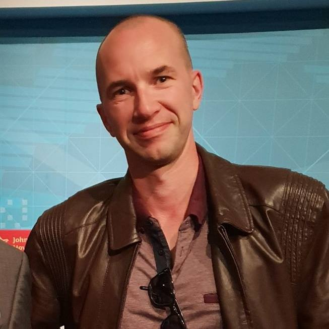

Derek
My name is Derek Geerin, currently studying IT and programming at RMIT university. I am married to a Filipina, and I have 3 kids, all boys, 1 with my wife who is now four months old, 1 with an ex who is 10 years old and my wife's son, my stepson who is 9 years old. I have been into IT since my family first got an Amiga 500 and since then I have been gaming and building computers all my life. I am studying IT to go on to my bachelor's degree in IT and move on to start my own software application business.